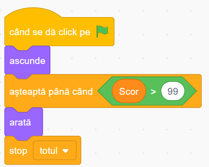
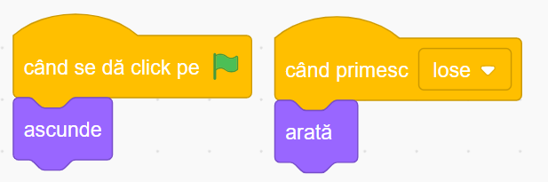

Jocul "Beach Ball Bounce" în Scratch
Povestea jocului
Este o zi perfectă de vară pe o plajă însorită! În acest joc plin de distracție și provocări, tu controlezi un colac de înot colorat care trebuie să mențină o minge de plajă în aer. Scopul tău este să nu lași mingea să atingă nisipul și să obții cât mai multe puncte!
Pe lângă provocarea principală, vei avea șansa să colectezi scoici marine care îți aduc puncte bonus. Dar ai grijă la peștii pufferfish care apar din când în când - atingerea lor cu mingea îți va scădea din punctaj. Acest joc distractiv combină reflexele rapide cu abilitățile de sincronizare și este perfect pentru a învăța concepte importante de programare în Scratch.
Ce vei învăța
- Controlul obiectelor folosind mouse-ul
- Simularea fizicii și mișcării realiste a mingii
- Generarea de obiecte aleatorii cu comportamente diferite
- Detectarea coliziunilor între multiple personaje
- Implementarea unui sistem de scor cu recompense și penalizări
Să începem!
Pentru a crea acest joc mai ușor, am pregătit un proiect starter cu colacul de înot și mesajele de victorie/înfrângere deja adăugate. Tot ce trebuie să faci este să adaugi restul personajelor și să programezi comportamentul lor!
Deschide proiectul starterSfat: Apasă butonul "Vezi în interior" pentru a putea edita proiectul, apoi "Remixează" pentru a salva propria versiune!
1 Personajele jocului
Proiectul starter conține deja colacul de înot și câteva elemente. Va trebui să adăugăm mingea de plajă, scoicile și peștele puffer din biblioteca Scratch:
Swim Ring (Colacul)
Personajul principal pe care îl vei controla cu mouse-ul pentru a respinge mingea și a colecta obiecte.
Beach Ball (Mingea de plajă)
Obiectul principal care trebuie menținut în aer, căzând în mod natural și ricoșând când atinge colacul.
Shell (Scoica)
Obiect bonus care apare aleatoriu și aduce puncte suplimentare când este atins de minge.
Pufferfish (Peștele balon)
Obstacol care apare aleatoriu și scade punctajul când este atins de minge.
Linie
O linie invizibilă plasată la baza ecranului pentru a detecta când mingea atinge solul (înfrângere).
Adăugarea personajelor lipsă:
- Pentru a adăuga Mingea de plajă, apasă pe iconița "Alege un personaj" din colțul din dreapta jos
- Caută "beach ball" sau "volleyball" în biblioteca Scratch și alege o minge colorată
- Pentru Pufferfish, caută "pufferfish" și alege un model potrivit
- Pentru decor, caută "beach" și selectează un decor de plajă precum "Malibu Beach"
Sfat
Personajul "Shell" (scoica) are 3 costume diferite care vor fi folosite aleatoriu pentru a adăuga diversitate în joc.
2 Controlarea colacului cu mouse-ul
Primul pas este să facem colacul să urmărească mouse-ul pe axa orizontală. Acesta va fi instrumentul principal pentru a menține mingea în aer. Selectează personajul Swim Ring și adaugă următorul cod:
Cum funcționează:
- La începerea jocului - colacul se poziționează în partea de jos a ecranului, se face vizibil, și se setează scorul inițial la 0.
- Controlul mișcării - într-o buclă infinită, colacul își ajustează poziția orizontală (x) pentru a urma poziția mouse-ului (mouseX).
- Limitarea mișcării - Ne asigurăm că colacul nu poate ieși din marginile ecranului.
Sfat
Valoarea y a colacului rămâne fixă (-140) pentru a-l menține în partea de jos a ecranului. Poți ajusta această valoare dacă vrei să schimbi înălțimea la care se deplasează colacul.
3 Programarea mingii de plajă
Acum vom programa comportamentul mingii de plajă, care este elementul central al jocului. Mingea va cădea în mod natural, va ricoșa când atinge colacul și va adăuga puncte la scor. Selectează personajul Beach Ball și adaugă următorul cod:
Cum funcționează:
- La început - mingea se poziționează în partea de sus a ecranului și primește o direcție inițială aleatoare.
- Simularea gravitației - într-o buclă infinită:
- Aplicăm o forță gravitațională constantă (modifică y cu un număr negativ)
- Verificăm dacă mingea atinge colacul - în acest caz, ricoșează și adaugă un punct
- Verificăm dacă mingea atinge linia de jos - în acest caz, jocul se termină
- Ricoșare - Când mingea atinge colacul, ii dăm o velocitate pozitivă (în sus) și o direcție ușor aleatoare pentru a face jocul mai interesant.
Sfat
Poți face jocul mai dificil sau mai ușor ajustând valorile de gravitație și ricoșare. O valoare mai mare pentru gravitație va face mingea să cadă mai repede.
4 Adăugarea scoicilor bonus
Pentru a face jocul mai interesant, vom adăuga scoici marine care apar aleatoriu pe ecran. Când mingea atinge o scoică, jucătorul primește puncte bonus. Selectează personajul Shell și adaugă următorul cod:
Cum funcționează:
- La început - ascundem scoica originală și pregătim generarea de clone.
- Generarea scoicilor - într-o buclă infinită:
- Așteptăm un interval aleatoriu de timp (între 5 și 10 secunde)
- Creăm o nouă scoică (clonă)
- Comportamentul scoicilor - fiecare clonă:
- Alege aleatoriu unul din cele 3 costume disponibile
- Apare la o poziție aleatoare pe ecran
- Se face vizibilă pentru 5 secunde
- Verifică constant dacă este atinsă de minge, caz în care adaugă 3 puncte la scor și dispare
Sfat
Poți adăuga efecte sonore sau vizuale atunci când mingea colectează o scoică pentru a face experiența mai satisfăcătoare.
5 Adăugarea peștelui pufferfish
Pentru a crește dificultatea, vom adăuga un pește pufferfish care apare aleatoriu. Dacă mingea atinge acest pește, jucătorul pierde puncte. Selectează personajul Pufferfish și adaugă următorul cod:
Cum funcționează:
- La început - ascundem peștele original și pregătim generarea de clone.
- Generarea peștilor - într-o buclă infinită:
- Așteptăm un interval aleatoriu de timp (între 10 și 15 secunde)
- Creăm un nou pește (clonă)
- Comportamentul peștilor - fiecare clonă:
- Apare la o poziție aleatoare pe ecran
- Se face vizibilă pentru 4 secunde
- Verifică constant dacă este atinsă de minge, caz în care scade 5 puncte din scor și dispare
Pentru scoici (bonus):
Pentru pufferfish (penalizare):
6 Condiții de victorie și înfrângere
În final, vom adăuga condiții pentru a determina când jocul se termină cu victorie sau înfrângere. Vom folosi personajele "Win" și "Lose" care sunt deja în proiect.
Pentru personajul "Win":
Când scorul atinge 50, jucătorul câștigă!
Pentru personajul "Lose":
Când mingea atinge pământul (linia de jos), jocul se termină!
Cum funcționează:
Ambele personaje sunt ascunse la început. Ele apar doar când sunt îndeplinite condițiile specifice:
- Win - verifică constant dacă scorul a atins 50 de puncte și afișează un mesaj de felicitare când această condiție este îndeplinită.
- Lose - ascultă pentru mesajul "game over" (care este trimis când mingea atinge linia de jos) și afișează un mesaj de înfrângere.
Când apare oricare dintre aceste mesaje, jocul se oprește folosind blocul "stop [totul]".
Sfat
Poți personaliza mesajele de victorie și înfrângere sau poți adăuga efecte sonore pentru a face finalul jocului mai interesant.
7 Testează și îmbunătățește
Acum că toate elementele jocului sunt implementate, este timpul să îl testezi! Apasă steagul verde și încearcă să menții mingea în aer cât mai mult timp, colectând scoici și evitând peștii pufferfish.
Provocări pentru îmbunătățirea jocului
După ce ai terminat jocul de bază, încearcă aceste îmbunătățiri:
Adaugă efecte sonore
Adaugă sunete pentru ricoșarea mingii, colectarea scoicilor, lovirea peștelui pufferfish și pentru finalul jocului.
Adaugă un cronometru
Implementează un timer care să măsoare cât timp reușești să ții mingea în aer.
Adaugă mai multe tipuri de obiecte
Creează noi obiecte bonus sau obstacole, cum ar fi stele de mare, meduze sau valuri.
Crește dificultatea progresiv
Fă jocul să devină mai dificil pe măsură ce scorul crește, de exemplu mărind viteza de cădere a mingii.
Felicitări!
Ai creat un joc captivant de vară în care trebuie să menții o minge de plajă în aer! Acest proiect ți-a permis să înveți despre controlul cu mouse-ul, simularea fizicii, generarea de obiecte aleatorii și implementarea unui sistem de punctaj. Acum poți:
- Împărtășește jocul cu prietenii și familia
- Personalizează-l adăugând propriile tale idei și îmbunătățiri
- Folosește aceste concepte pentru a crea alte jocuri similare